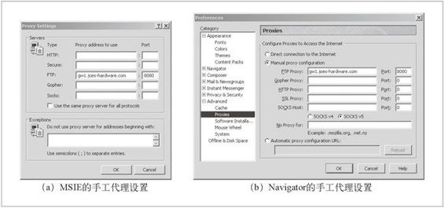
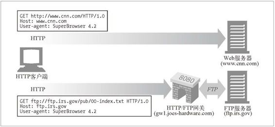
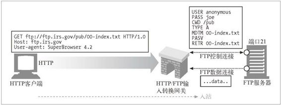
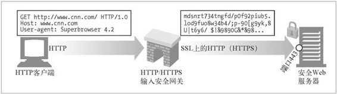
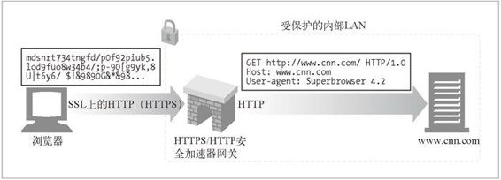

8.2 协议网关
将 HTTP 流量导向网关时所使用的方式与将流量导向代理的方式相同。最常见的方式是，显式地配置浏览器使用网关，对流量进行透明的拦截，或者将网关配置为替代者（反向代理）。
图 8-3 显示了配置浏览器使用服务器端 FTP 网关的对话框。在图中显示的配置中，配置浏览器将 gw1.joes-hardware.com 作为所有 FTP URL 的 HTTP/FTP 网关。浏览器没有 将 FTP 命令发送给 FTP 服务器，而是将 HTTP 命令发送给端口 8080 上的 HTTP/FTP 网关 gw1.joes-hardware.com。

图 8-3 配置一个 HTTP/FTP 网关
图 8-4 给出了这种网关配置的结果。一般的 HTTP 流量不受影响，会继续流入原始服务器。但对 FTP URL 的 请求则被放在 HTTP 请求中发送给网关 gw1.joes-hardware.com。网关代表客户端执行 FTP 事务，并通过 HTTP 将结果回送给客户端。

图 8-4 浏览器可以通过配置，让特定的协议使用特定的网关
后面的小节会介绍各种常见网关类型：服务器协议转换器、服务器端安全网关、客户端安全网关以及应用程序服务器。
8.2.1 HTTP/*：服务器端Web网关
请求流入原始服务器时，服务器端 Web 网关会将客户端 HTTP 请求转换为其他协议（参见图 8-5）。

图 8-5 HTTP/FTP 网关将 HTTP 请求转换成 FTP 请求
在图 8-5 中，网关收到了一条对 FTP 资源的 HTTP 请求：
ftp://ftp.irs.gov/pub/00-index.txt
网关会打开一条到原始服务器 FTP 端口（端口 21）的 FTP 连接，通过 FTP 协议获取对象。网关会做下列事情：
发送 USER 和 PASS 命令登录到服务器上去；
发布 CWD 命令，转移到服务器上合适的目录中去；
将下载类型设置为 ASCII；
用 MDTM 获取文档的最后修改时间；
用 PASV 告诉服务器将有被动数据获取请求到达；
用 RETR 请求进行对象获取；
打开到 FTP 服务器的数据连接，服务器端口由控制信道返回；一旦数据信道打开了，就将对象内容回送给网关。
完成获取之后，会将对象放在一条 HTTP 响应中回送给客户端。
8.2.2 HTTP/HTTPS：服务器端安全网关
一个组织可以通过网关对所有的输入 Web 请求加密，以提供额外的隐私和安全性保护。客户端可以用普通的 HTTP 浏览 Web 内容，但网关会自动加密用户的对话（参见图 8-6）。

图 8-6 输入 HTTP/HTTPS 安全网关
8.2.3 HTTPS/HTTP客户端安全加速器网关
最近，将 HTTPS/HTTP 网关作为安全加速器使用的情况是越来越多了。这些 HTTPS/HTTP 网关位于 Web 服务器之前，通常作为不可见的拦截网关或反向代理使用。它们接收安全的 HTTPS 流量，对安全流量进行解密，并向 Web 服务器发送普通的 HTTP 请求（参见图 8-7）。

图 8-7 HTTPS/HTTP 安全加速器网关
这些网关中通常都包含专用的解密硬件，以比原始服务器有效得多的方式来解密安全流量，以减轻原始服务器的负荷。这些网关在网关和原始服务器之间发送的是未加密的流量，所以，要谨慎使用，确保网关和原始服务器之间的网络是安全的。